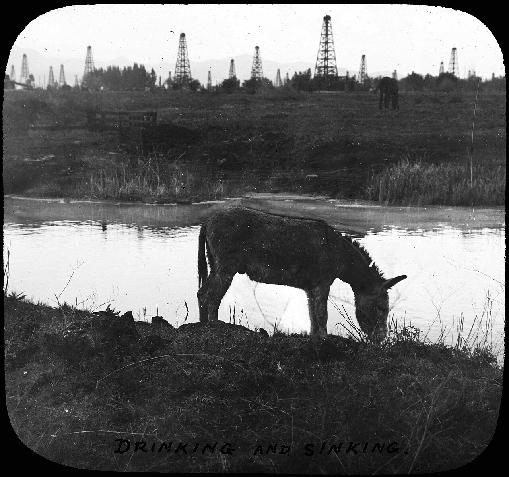
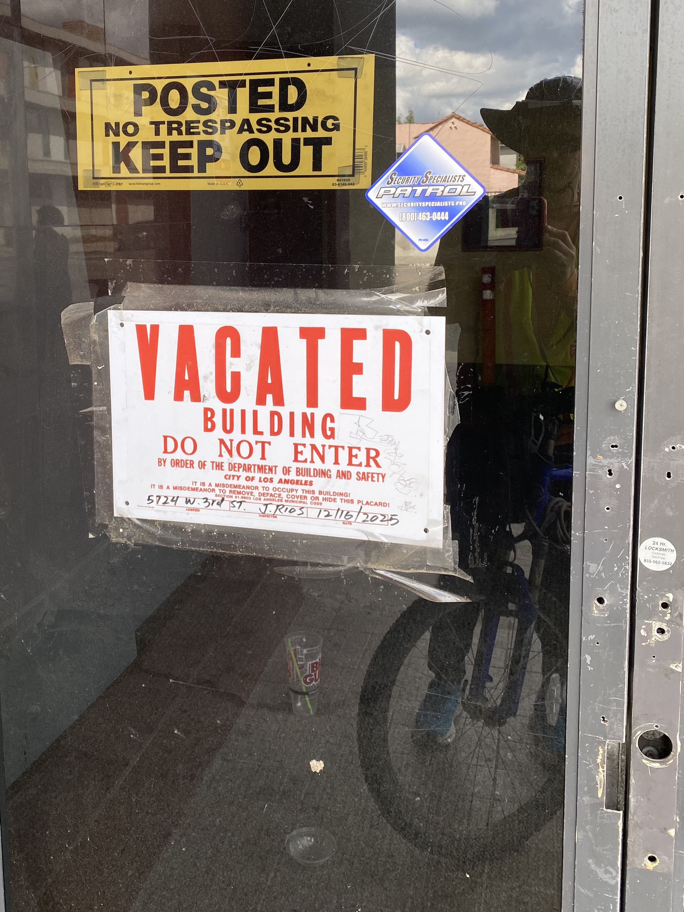
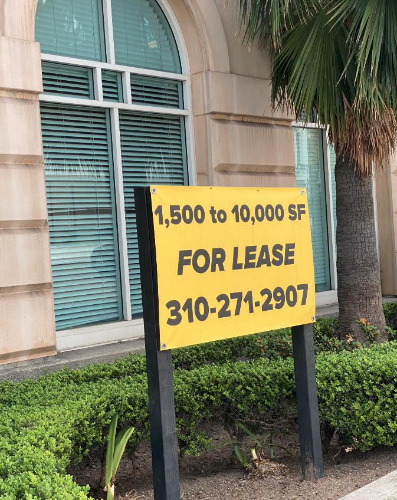
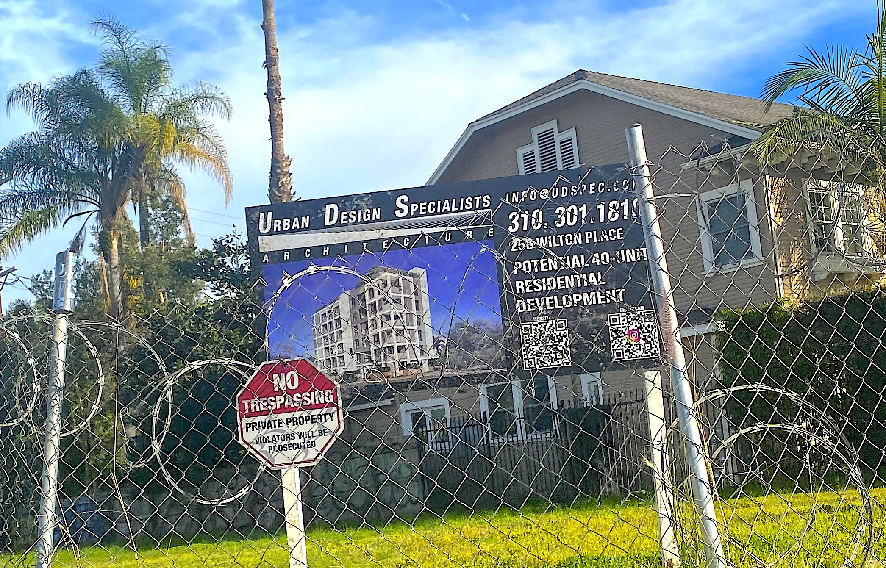
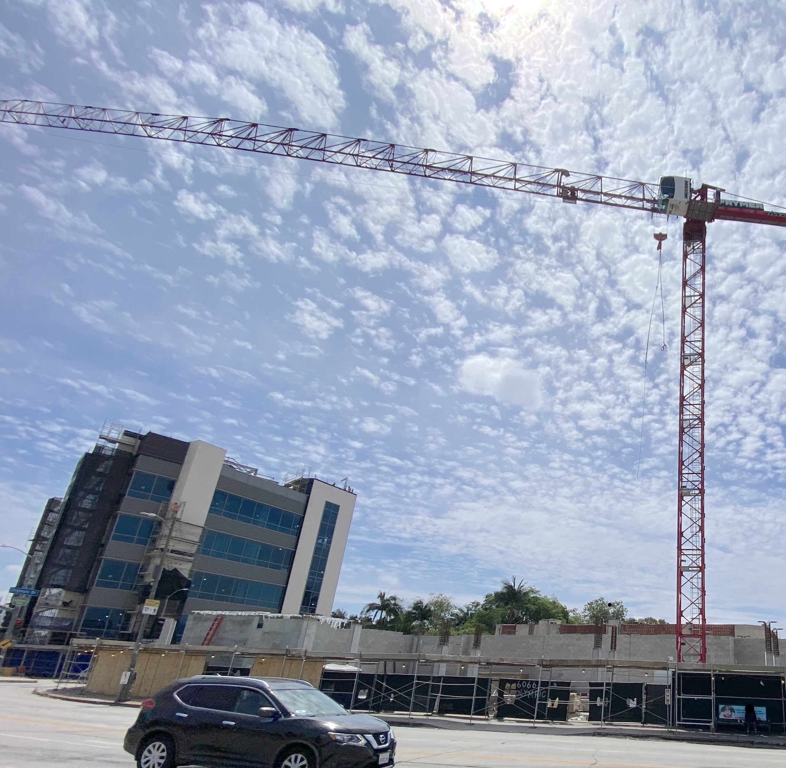
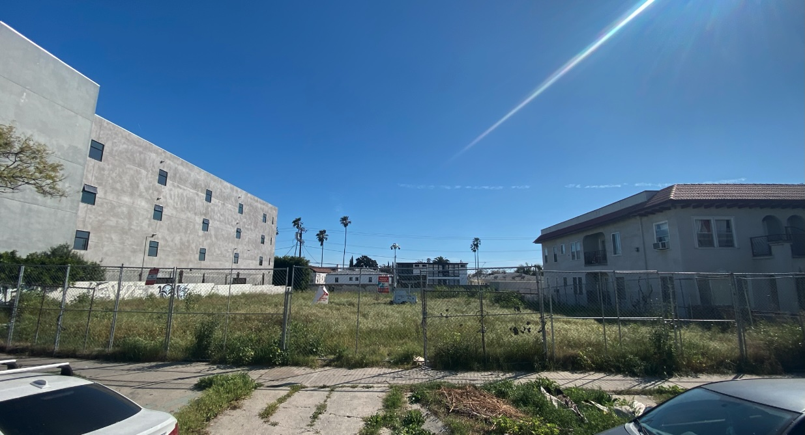
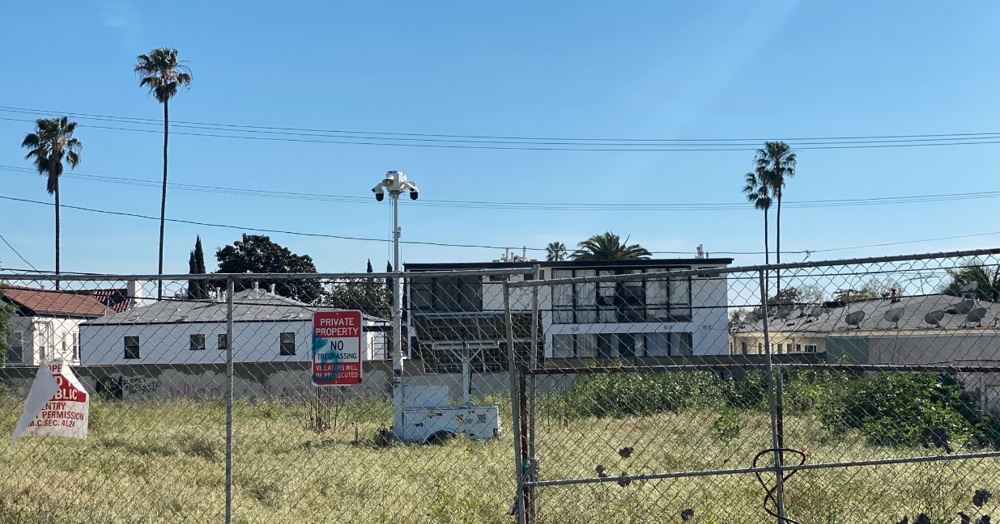

Before the new D Line subway extension opened in May, I biked the corridor to map the vacant lots and underused buildings around it that new incentives could turn into high-density housing. Click the green points to see the vacancies.
The D Line subway extension opened in May 2026, Los Angeles’s first new heavy rail in 26 years and a hard-won win over the NIMBY forces that fight density. Even with the City Council voting to delay SB 79 (the law legalizing taller housing near transit) for four more years, the case is simple: L.A. needs homes, and with roughly three-quarters of the city’s residential land zoned for single-family houses, infill along transit corridors is one of the few places left to build them.

This subway was planned to run down Wilshire to Fairfax, then north to the San Fernando Valley, but in March 1985 methane rising from the oil field beneath the Fairfax district exploded at a Ross Dress for Less near 3rd and Fairfax. The field had been drilled out by the 1930s and its wells capped, many of them poorly, and gas keeps seeping up through old bores and faults. The tar pits next door are proof the ground still vents on its own; pave it over and the gas has nowhere to go. It pooled in a sealed back room of the store until an employee punched a timecard in the next room, and the spark lit it off. Congressman Henry Waxman, whose district covered the area and whose constituents opposed the subway, used the blast to win a federal ban on tunneling through a Mid-Wilshire “methane zone.”
The line was rerouted north up Vermont Avenue instead, and the Wilshire branch stalled at Western for a generation, the tangled saga Elkind tells in Railtown. Waxman finally championed lifting his own ban in 2007, once engineers showed the tunneling could be done safely. Construction began in 2014, and in May 2026 trains ran beneath Wilshire west of Western for the first time, the corridor mapped above.

Method: I rode my bike around the new stations, photographing every clear sign of underuse (a vacant lot, a for-lease or vacancy sign, blocked-off surface parking, an empty or shuttered building) and tagged each photo with GPS. It is a point-in-time street survey, not a legal or exhaustive parcel record, but every site can be checked against county assessor parcel numbers and zoning.

The permit trail left behind tells a typical tale: small repairs (one permit was just to fix a sink), then a sale, then demolition, and then nothing. It has sat empty since, growing weeds and drawing neighbor complaints about dumped trash, which may be what put up the fence and the barbed wire. The pattern is common. An empty lot is cheap to hold: with no building to assess, the property tax on bare land runs lower than on the same lot with even a condemned house, so an owner can sit and wait for the right offer while the housing that could stand here never gets built. A new subway stop is exactly the kind of event that finally makes building pencil out.

Not all transit counts the same. Los Angeles has opened plenty of new rail since 2000, the Expo Line to Santa Monica, the K Line through Crenshaw, the Regional Connector downtown, but every mile of it was light rail. The D Line extension is the region’s first new heavy-rail subway in that whole stretch, and the distinction pays off here: SB 79 (effective July 2026) saves its tallest allowances, buildings up to about nine stories, for stops on heavy rail and the highest-frequency transit. These Wilshire stations sit in that top tier.


SB 79 is not the only building incentive. The State Density Bonus Law trades extra size for affordable units, AB 2097 scrapped parking minimums near transit, and Los Angeles layers its own Transit Oriented Communities program on top, all of it pushing housing towards empty parcels like these.

Bare dirt is taxed lighter than a building, and a mobile surveillance unit never needs a wage or workers’ comp.
More on this: LAist on L.A.’s delay plan; nandert on the region’s transit expansion; and the state’s official SB 79 page. The council vote was first reported by the Los Angeles Times.